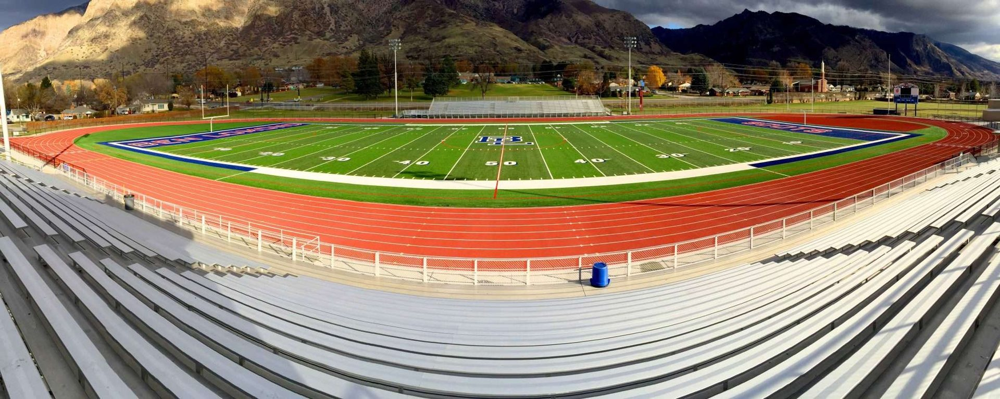

G-Max testing. Independent testing. CAD documentation included. The only Utah contractor offering comprehensive synthetic turf : grooming, infill management, safety testing, and warranty-preserving care.
Most turf contractors disappear after installation. SafePlay Pro is the only Utah contractor providing comprehensive post-installation : grooming, infill aeration, independent G-Max testing, and documented condition reports.
G-Max impact testing measures how hard your field has become. Every field hardens . Hard fields mean more injuries. SafePlay Pro runs independent ASTM-compliant G-Max testing, not connected to any installer or manufacturer.
Regular grooming keeps turf fibers upright and playing surfaces consistent. Infill aeration prevents compaction that hardens the field and increases injury risk. We use calibrated commercial . Not the kind of gear that damages fields when operated incorrectly.
High-traffic areas lose infill faster than the rest of the field. We identify and replenish depleted zones, repair damaged seams, patch worn sections, and address drainage issues before they become structural problems.
Independent G-Max impact testing to ASTM F355-A and F1936 standards. Results documented in detailed CAD drawings that record field condition, test locations, and scores over time. Your facilities team gets the data they need for insurance compliance, warranty documentation, and informed maintenance decisions.

We walk the entire field surface, test infill depth and compaction at multiple locations, check seams and edges, evaluate drainage, and document the field’s current condition with CAD drawings.
Professional grooming with calibrated equipment to lift matted fibers and redistribute infill. Deep aeration to break up compaction layers that harden the surface and reduce shock absorption.
Independent G-Max impact testing at 10 locations per field. Infill replenished in depleted areas. Damaged seams repaired. Worn sections patched. Any safety concerns flagged immediately.
Complete CAD documentation of field condition, test results, and all work performed. Maintenance schedule established. Reports formatted for insurance requirements, warranty compliance, and budget planning.
Most fields benefit from professional maintenance 2–4 times per year, with G-Max testing 1–2 times annually. High-use fields (daily practice plus games) may need monthly grooming. The NFL tests before every game. High schools should test at minimum once . Twice is better. Regular maintenance extends field life by years and keeps your warranty valid.
Yes, and it’s extremely common. Every synthetic turf field hardens over time as infill compacts and fibers mat down. A harder field transmits more impact energy into athletes’ , which means more sprains, more fractures, and a measurable increase in concussions. G-Max testing quantifies exactly how hard your field is. If it exceeds 200g at any test location, it fails ASTM safety standards and should be addressed immediately.
Annual maintenance programs for a standard athletic field typically run $5,000–$15,000 per year, depending on field size, condition, and scope of services. G-Max testing alone runs around $1,000 per test. Compare that to the $500,000–$1,000,000 cost of full field . Professional maintenance is the single best way to protect that investment and extend field life.
No hard sell. No mystery pricing. Brian will assess your field and give you an honest : whether that’s a maintenance program, G-Max testing, or targeted repairs.
Prefer to call? ☎ 303-880-9362